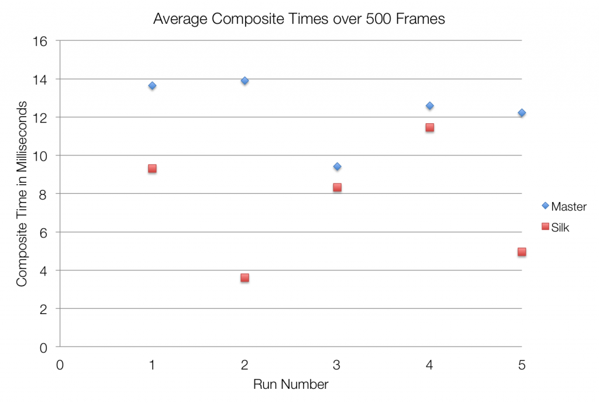

在透過《「絲綢」專案 (上)》初步了解 VSync 的概念，以及 FPS 與遊戲效能之間的關係之後，緊接著來看看繪圖流程，設法讓自己的 App 畫面更流暢吧！
繪圖流程
Gecko 的繪圖流程可簡單解釋為下列三步驟：
- 在主執行緒上繪製新的幀像
- 透過 LayerTransaction IPC 將更新過的內容傳送到合成器 (Compositor)
- 使用合成器產生新的幀像內容
在最理想的狀態下，我們應該可以在 16.6 ms 內完成上述三個步驟，但其實大部分都辦不到。因為步驟 (1) 與 (3) 分別使用不同的軟體計時器，所以就算我們都使用 16.6 Hz 的軟體計時器來處理，也無法真正同步這三個步驟。而且軟體計時器也未參照硬體的 VSync 訊號，繪圖流程中的每一步驟亦沒有與 VSync 同步。而「絲綢」專案則是以硬體 VSync 計時器取代步驟 (1) 與 (3) 所使用的獨立軟體計時器，進而得到更平穩的畫面。步驟 (2) 的實作在這裡並不會真正影響到結果，但我們仍列出來以說明完整的繪圖流程。
以硬體 VSync 同步繪圖的時機 (Align Painting)
只要讓負責推動畫面更新的計時器與 VSync 同步，我們就可以得到更流暢的動畫。舉例來說，大多數的動畫仍是在主要執行緒繪製，如果我們使用 VSync 計時器所產生的平穩時間戳記來設定動畫的位置，就能產生更順暢的動畫；這也包含了常用的 requestAnimationFrame 動畫！另外有別於步驟 (1) 與 (3) 使用各別的軟體計時器，如果能以 VSync 計時器來推動整個繪圖流程，就能確保我們是以固定的流程順序進行描繪。
根據 VSync 重複取樣觸控輸入事件
有了「絲綢」專案，我們就能開啟觸控裝置的重新取樣功能，讓手指滑動相關的操作更平順。因為已經有文章談過為裝置所收到的觸控位置進行重新取樣 (Touch Resample)，本文就不再說太多了。有了「絲綢」，我們終於可以開啟此功能了！
透過硬體 VSync 同步圖像合成的時機 (Align Composite)
最後，就是使用硬體 VSync 來同步圖像合成 (Composite)。「合成」就是將所有產生出來的圖層疊合成一張圖像，以顯示於螢幕上。而「絲綢」專案即是在硬體 VSync 訊號產生後，馬上觸發合成。我們還因此得到了縮減的合成時間的附加效益。其縮減的時間如下：

如果在參考平台手機「Flame」上處理顯示相關的驅動程式，會在接近 VSync 訊號產生時，嘗試去取得一個互斥器的所有權。這個等待的動作大約會花費 5~6 ms 完成，也隨著大大增加一幅幀像的合成時間。但如果能在 VSync 訊號之後立刻開始處理合成，就只要花費較短時間取得此互斥器，進而大幅縮短一幅幀像所需的時間。如此不僅能得到順暢的動畫，還能因為縮短合成時間而達到省電的效果，不是很棒嗎？
綜合以上三個部分，我們從硬體 VSync 得到了固定的繪圖流程與更順暢的畫面，且能在 16.6 ms 內完成 App 的畫面並傳送至合成器。而在下個 VSync 時，合成器隨即開始合成最後的畫面，並即時讓下下個 VSync 呈現到螢幕上。因為我們在 VSync 時才處理這一連串的繪圖流程，減少了軟體計時器所產生的問題，也同時提升了畫面的順暢度。在原本沒有「絲綢」的實作下，最理想的狀態是每個幀像都能在 16.6 ms 內完成。在一般情況下當然沒有太大的問題。但如果下個幀像的時間內卻合成了兩幅幀像，即便流程中的每一步驟都沒有慢下來過，還是會看到不平穩的畫面。若能同步 VSync 得到固定的繪圖時機，我們就能減少不當的排程所造成的問題。
{kind=link}
上圖是未搭配「絲綢」的繪圖流程。最底部的背景是 Composites (3)，中間繪製的 (1) 有 Styles、Reflow、Displaylist、Rasterize。而 VSync 則是頂端的小小橘色方塊。最下面則是 Layer Transactions (2)。先看到一開始的合成與繪製時間並未對齊同步，所以動畫所使用的時間戳記會因為其所處執行緒 (可能在主要執行緒或合成器執行緒) 的不同，其位置也有所不同。再來可發現，因為合成器正等待裝置驅動程式取得互斥器，所以會拉長合成的時間。最後，只要你對此流程發生的理由與時機不夠了解，就很難從這些不固定的順序中找出系統問題。
{kind=link}
接著看看搭配了「絲綢」的繪圖流程。合成時間變得比較短，且整個流程都在 VSync 訊號才開始。因為我們能準確在 VSync 時開始合成，所以能縮短合成時間。而且所有流程也有清楚的順序。合成與繪製都使用同一個時間戳記，因此達到更平穩的動畫。最後，由於所有作業都在下個 VSync 之前結束，也讓整張圖的流程劃分得更明顯、更順暢。
「絲綢」專案最終希望能橫跨 Firefox 與 Web 而提供更順暢的經驗。有許多人都正努力投入此專案。感謝台灣的施賀傑 (Jerry Shih) 與邱柏叡 (Boris Chou)，還有 Jeff Hwang、Mike Lee、Kartikaya Gupta、Benoit Girard、Michael Wu、Ben Turner、Milan Sreckovic 等人對「絲綢」專案投入的許多心力。
原文連結：Project Silk